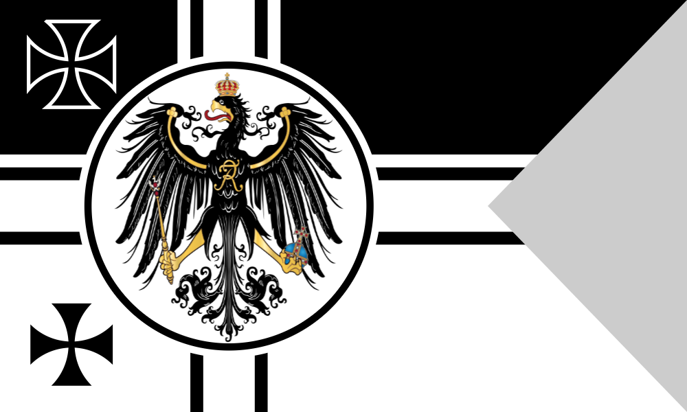

Prussian Wars in 1860s
Nothing happens without a cause. Thus, Germany emerging as a great European power was not random and we can indicate a sequence of events that contributed to this situation. On of the causes were Prussian Wars in 1860s.
Otto von Bismarck was appointed Prime Minister under the rule of King Wilhelm I in 1862. It is said that Bismarck's measures and political decisions provoked the outbreaks of three victorious wars between Prussia and other countries, such as Denmark (1864), Austria (1966) and France (1870). These three wars led not only to the unification of Germany and asserting Prussia as the dominant state but also to the emergence of new European power. Thus, the rising of a strong Second Reich upset the balance of the Old Continent. Moreover, Prussian wars showed a new course in effective militarism.
Before the unification
After Napoleonic Wars, Germany consisted of 39 German-speaking states (Congress of Vienna, 1815 – the creation of German Confederation), with Prussia and Austria being the most powerful and dominant (both having the largest land, population and army). The unification and strong Prussia were crucial to Bismarck as he mentioned it in his Blood and Iron speech shortly after receiving position by the king.
Bismarck was not the first one to talk about the unification of Germany, nevertheless, he had taken firm and successful steps in order to achieve this goal.
There were two different concepts of unified Germany. The first one “smaller” excluded the Kingdom of Austria, as it was a part of multi-ethnic and thus often problematic Austrian Empire. The second – “greater” Germany conception included Austria, recognizing its traditional and historical importance.
The 1860s brought a change in Germany as the country was now ruled by Wilhelm I and new Prime Minister – Otto von Bismarck. In fact, intelligent Bismarck had a massive and vital impact on German politics, as he manipulated the king and had extraordinary power. New Minister-President focused rather on realistic politics (Realpolitik) leaving not-so-successful idealism in the past. Realpolitik – is a way of ruling the politics, in which the emphasis is put on practical, realistic measures and goals, which are seen as more effective than idealistic views.
War with Denmark
Prussian-Danish War from 1864 (also known as Second Schleswig War) was fought by Austria and Prussia on one side and Denmark on the other. Danish measures in the years prior to this conflict were seen as a violation of the London Protocol and Prussian rights. Prussia started the war in order to acquire Schleswig-Holstein. The already existing tensions after the German defeat in the First Schleswig War between 1848-1850) were also one of the factors that contributed to the outbreak of another war. This one was much shorter as it started on the 1st of February and ended on the 30th of October, 1864, this time with a failure of Denmark. As a result of this conflict, Austria gained Holstein (this was not viewed positively by Prussian public opinion), and Prussia acquired Schleswig and Lauenburg. It was also agreed that the Prussian naval base would be relocated from Danzig to Kiel in Holstein – this decision was very important military.
War with Austria
Austro-Prussian War (also known as the Seven Weeks' War) was fought between June and August in 1866. Bismarck as a supporter of the “smaller” Germany concept, wanted to exclude Austria from unification. Moreover, Austria and Prussia were the most powerful German states, thus, rivalries were inevitable as Prussia wanted to be the one under whom unification will take place. This way, the Kingdom of Prussia would assert itself as a dominant state and at the same time undermine Austria. The war was also entered by the Italians, who had allied with Prussians. Seven Week's War was a huge defeat of Austria, which ended with the Treaty of Prague and hence meant Austria's non-inclusion in subsequent unification. Other consequences that resulted from the war were an acquisition of Holstein, Hanover, Hesse-Kassel, Nassau, and Frankfurt by the Kingdom of Prussia. Furthermore, Prussia with its victory created the North German Organization. Also, Italy gained Venetia (part of the unification of Italy) by the agreements of Peace of Vienna.
Franco-Prussian War
Two victorious wars were not the end of Prussian aggression. The Kingdom of Prussia showed itself as a dominant German state in the earlier conflicts and now it wanted to unify Germany. Tensions between Germany and France existed since the Napoleonic Wars. In the second part of the XIX century, the rising power of Prussia concerned France who’s hegemony in Europe became threatened. The anxiety grew even bigger when prince Leopold (related to Prussian royals) was viewed as the candidate for the Spanish throne. France had seen it as a potential danger, as it would, in fact, meant encirclement of French territories. Although king Wilhelm I promised that Leopold will not be a candidate to the Spanish throne anymore, Bismarck edited the description of telegraph later sent to France in order to provoke conflict. Hence, on the 19 July 1870, French ruler – Napoleon III declared war on Prussia. The war was a humiliating defeat for France as the Prussian army (with its allies – North German Confederation and some southern German states) was better educated, equipped and commanded. Paris had been under siege since mid- September, fell in January 1871. Following these events, there was a victory march in Paris and Prussian king was proclaimed the German Emperor in the Hall of Mirrors, Versailles. Thus, German unification (without Austria) was finally completed. The conflict officially ended on 10 May 1871, when the peace treaty was signed (The Frankfurt Treaty). France lost Alsace-Lorraine, had to pay an indemnity of 5,000 million marks and suffered partial occupation till it was fully paid. Franco-Prussian War was also the downfall of Napoleon III and the Second French Empire. Furthermore, it contributed to many socio-economic problems in the country and the emergence of revanchist movements. Moreover, French defeat marked the imbalance of the Old Continent with the emergence of new power – the Second Reich.
Militarism
Prussian wars showed that warfare should be modernized as in many cases it was obsolete and ineffective. War with France, whose army was under-equipped and unprepared for a conflict with strong, efficient German troops, faced humiliating defeat because of the inadequate warfare status. Prussia showed that the emphasis bound to be put on rapid mobilization and deployment. It also showed that wars from now on would rely on movement and be pretty short in duration. Moreover, armies had to be well-equipped, educated (to some extent) and conscripted. The generals bound to be competent in order to be effective and able to achieve triumph in battles.
Conclusion
The Prussian Wars showed how great of a politician Bismarck was. His well-calculated and firm measures contributed to Prussia asserting itself as a dominant German state and later led to the unification of Germany under Prussian king – Wilhelm I. Other than that these conflicts gave the XIX century world lessons about modern warfare. The most important consequence of these wars seemed to be the establishment of a unified Germany as a new European power. Germany had entered the ‘power game’ and shifted the balance of Europe. Thus, the events of the 1860s provoked a new course in politics on the Old Continent. Sources
Prussian Timeline
| Germanic conquest of the Wends | 6-12th c. |
| Battle of Tannenburg | 1410 |
| Thirty Years' War | 1618-48 |
| Kingdom of Prussia named under Hohenzollerns | 1701 |
| Pomerania won from Sweden | 1715 |
| War of Polish Succession | 1734-35 |
| War of Austrian Succession | 1740-48 |
| Seven Years' War (Saxony) | 1756-63 |
| Battle of Jena-Auerstadt | 1806 |
| Battle of Friedland | 1808 |
| Battle of Wagram | 1809 |
| Battle of Borodino | 1812 |
| Battle of Luetzen (Gross Goerschen)
Battle of Leipzig |
1814 |
| Austro-French War | 1859 |
| Second Prussian-Danish War | 1864 |
| Seven Weeks War(Prussia/Italy vs Austria) | 1866 |
| Battle of Koeniggraetz/Sadowa(Hradec Kralove) | 1867 |
| Franco-Prussian War | 1870 |
| Battles of Mar la Tour & Gravelotte
Battle of Sedan Surrender of Paris |
1871 |
| General Staff plans 2-front war | 1894 |
| World War One | 1914-18 |
Watch this vedio to get better understand!
Cited from
https://ibhistoryrevision.home.blog/2019/12/01/prussian-wars-in-1860s/
http://prussianmachine.com/prussia/timeline.htm